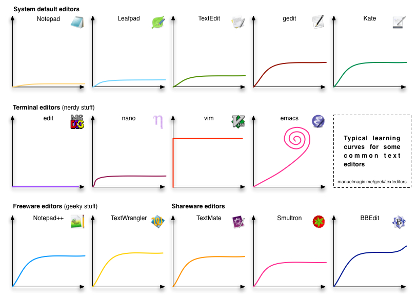

此頁面記載了許多當初對我幫助極大的連結，期望能將那些曾經幫助到我的連結彙整起來，以幫助更多人！當然，若你有私藏的相關連結也請留言分享給我唷 :)
程式／演算法
互動式學習網站
- Snakify
tags:PythonJavaScriptPython & JS 的基礎語法題目以及教學，每個基礎概念都有影片和文字講解，很適合初學者學習。這也是我剛開始學習 Python 所使用的網站～
- Kaggle
tags:PythonMLDLCompetition作為 機器學習 與 資料探勘 的工程師，不可能不知道的網站之一！對於 Python, ML, DL 都有詳盡的教學，也有實作，其上有雲端環境可直接在遠端主機上運行，不用吃到本機的資源。另外有很多競賽，像是數據預測、辨識等等，附有獎金與面試等機會。
- W3Schools
tags:Web languageSQLData Analysis有各種程式語言、數據分析套件和資料庫等教學，先是基礎概念講解，而後有填空、互動練習。
- picoCTF
tags:CTFCTF (Capture The Flag) 奪旗賽，又稱資安攻防賽。該網站係美國提供給高中生練習 CTF 的網站，以 RPG 方式進行，非常容易上手，值得一試！
- R語言翻轉教室
tags:R由 台大教授 Wush Wu 所建置的網站，其目的在於能夠在 R 語言的編譯器中同時使用教學系統，學習與實作都在本機上進行。個人以往上課時有使用過，難度由淺入深，很適合學習。
- HackerRank
tags:AlgorithmData StructureAIProgramming Language主題式的 線上評測系統 (Online Judge)，包含演算法、資料結構、人工智慧和不同語言，個人感想是蠻像 Leetcode 的，亦可以爭取排名。
- CodinGame
tags:GameMLProgramming Language平台上有很多款不同的遊戲，每個遊戲係由程式所控制，你會控制你的角色和其他玩家對決，其中有不同階段，木頭3, 2, 1, 銅牌, 銀牌, 金牌和傳說七種階段，成為該階段的第一名並打敗 Boss 後才可升到下一階段。每季還有特別的遊戲，非常好玩，可以嘗試看看用程式玩遊戲的學習方式～
教學網站
- Node入門
tags:Node.js以實務的方式學習 Node.js，按照文章學習與實作後，便能建立一個可實際應用的網站，是一個很詳盡概念很清晰的網站，非常推薦！
- 演算法筆記
tags:AlgorithmData Structure師大資工的學長姊撰寫的，講解各式各樣的演算法與資料結構，內容蠻清楚好懂的，可以來這裡喚醒你過往的記憶～
- C Programming
tags:C資訊安全軟體工程計算機網路師大資工紀博文老師的教學網站，課程包括 C、資訊安全和軟體工程等等，課程教材都是公開的，包括了講義、教學影片和考卷，很適合想扎實建立程式設計基礎的初學者。
- Python-100天從新手到大師 (Github)
tags:Python按進度與主題編排長達 100 天的筆記，除了詳細筆記外也有實作的程式檔～
- freeCodeCamp
tags:Software developer Course提供許多免費且完整的課程，每一系列皆為 300 小時，包括了資料分析、資訊安全、機器學習和網頁應用等等，完成課程後還可拿到證書～
- Physcalの大魔導書
tags:OJ Solution大神的 Online Judge 解題部落格，會分析題目，講解如何破題～
- Morris’ Blog
tags:blog大神的部落格，發表 CS 相關的網站，包括了解題、網頁設計和工作應用等等，很值得一逛。
- Huli Medium
tags:blog文章都很優質！很多軟體業職涯上的建議與思考的文章、技術文章，講述概念時淺顯易懂，看他的文章真的是種享受，很推薦！
- AP325─從APCS實作題檢測三級到五級
tags:APCSAlgorithm中正資工教授 吳邦一 針對 APCS 寫的書籍，預設給實作三級以上的學生強化概念使用，不過書籍撰寫由淺入深，還包括了 APCS 題目詳解，蠻適合新手觀看的～
- 代碼隨想錄 (GitHub)
網站主要是以「軟體工程師」求職的演算法試題為主，但卻是很有效的建立演算法觀念的步驟與練習 :P
資源統整網站
- 程式競賽網路資源統整
tags:AlgorithmProgramming Contest這是一份由善心人士彙整的筆記，是有關程式設計競賽相關的學習資源彙整～
- 資訊培訓相關資源彙整
tags:AlgorithmProgramming Contest高中以臺灣高中生視角彙整的有關資訊培訓相關的學習資源～
- 資訊之芽算法班
tags:AlgorithmProgramming ContestProgramming Language臺大資工系固定會辦「資訊之芽」的營隊，講授演算法與程式設計，其會公開所有授課教材，內容淺顯易懂很適合初學演算法的人觀看～
- Free-programming-books
tags:AlgorithmProgramming LanguageCS Basic Concept程式相關的學習資源彙整，包括了影片、課程網站等等。
文章
- 當我們在學程式時，要學的到底是什麼？
- 如何自學程式
這篇文章蠻推的，作者是名學霸，也擔任區塊鏈共同創辦人，這篇文章說明了以他的視角而言，「為什麼學習程式？」、「為什麼喜歡？」以及「如何學習」，對於程式這塊領域感到迷茫的同學，不妨看看，也許能讓你看清自己的迷茫。當時看完後我的感觸也蠻深的。
LaTeX
- LaTeX語法教學-HackMD
- Latexjax basic tutorial教學
- LaTeX 維基教科書
- LaTeX (簡體中文的教學)
- Web: Overleaf
能用 LaTeX 共編的平台，拯救了我無數課程的書面報告！
Markdown
Markdown 是「輕量級標記式語言」，這樣說好像很難懂。現在 GitHub, Notion, HackMD 都支援。我們可以簡單記憶幾個符號，就能做出粗體、標題等等，快速產出一個乾淨美觀的文件，因此現在尤其在科技相關產業上很受歡迎，有些 Markdown 甚至支援 HTML，就能做更多精彩的事了！
- Tutorial
Markdown 語法教學，以概念輔以實際操作的方式學習，是我認為能最快學會 MD 的網站。
- 教學文章
- Markdown風格─git教學
除 Markdown 外，也有 Git 的教學，我認為比較偏向重點條列式的方式，比較適合學過一段時間，但忘記想恢復記憶的人類。
- Web: HackMD
貫徹使用 Markdown 目前用起來最順暢的線上共編平台，由台灣人開發的，總之非常之推薦，從大學到現在同學全部都在用啊～
Git
Git 簡而言之就是檔案的「時光機」，他是一種分散式版本控制系統，意即版本紀錄可以在多台不同主機上，而非集中式的。他跟 GitHub 不一樣，GitHub 是以 Git 作為版本控制系統 的程式碼代管服務平台。現在 Git 在四處都很常見，可以在不同的節骨眼開發不同功能，最後整合，甚至還能夠自動測試，在程式產品開發上超級好用，是身為資訊人必學的一項技能！
- Learn Git Branching
- Git 實務圖解
- 寫給大家的 git 教學
- 連猴子都能懂的 git 入門指南
- Git 教學 + Gif 操作動畫
- GIt shareslide 分支教學
- GitKraken
這是 Git 可視化的工具，將 git 相關檔案丟入後，會將 Commit 狀況視覺化，還蠻不錯的，也有提供編輯器。過度使用的話可能要付費購買～
- 30 天精通 Git 版本控管
這是 IT 邦幫忙 鐵人賽 30 天系列的文章，概念清晰且寫的好懂，同時是平台上的熱門文章，無論是學習還是學過想強化概念，我都覺得這系列文章很值得一看。
APP Developer
- Android for Developers
由 Google 設計的一系列 Android 開發課程
Unity
開發遊戲的強大工具！！！
- Unity Learn
Unity 本身就是做遊戲的引擎，也因此這網站上有很多熱心的人以「目標」導向，你能夠選擇想做的主題、類型，去選出一個 Tutorial，還會幫你安排時程學習關鍵概念，當你學習完後，就能夠完成一款遊戲。
- Unity for Beginners (raywenderlich)
- Unity for beginners
- Unity 教學
- HackMD Unity 教學 (Author: Bogay)
- Youtube: Unity Beginner Tutorials
- 給 Unity 程式入門者的 C# 教學
Online Judge
Online Judge 簡稱 OJ，由於程式碼解題批閱不易，因此有人想出了一個方法，那就是統一規定好輸入、輸出格式，每道題目都有若干個測試資料，只要一一執行程式，比對測試資料的正解，那就可以某程度上的驗證程式碼寫的對不對了。故 OJ 常常用來指派作業、程式練習等等，能在很短的時間內就知道結果。不過缺點則是要遵循格式相當麻煩，對於初學者會有些不友善。
- Virtual Judge
這是我們系上一位老師最愛用的網站，原因是我們可以在這網站上選取不同平台的題目，還能自己建立比賽、建立題目清單去練習與模擬正式比賽。唯一的缺點是平台有時會炸掉，主因也是因為使用者人數不少啦～
- LeetCode
求職時的傳統是：「你刷過 LC 嗎？」LeetCode 上很多面試時經典的白板題，求職前可以來這邊攢蹙累積一下，或許面試時剛好就會問出來了！！
- Coderbyte
類似 LeetCode 的網站，身為大佬的你刷完 LeetCode 也可以來這邊練個手感～
- 競程日記
學生自發性發起的 OJ，且又是少見的中文資源，題目也適合初學者～
- 高中生程式解題系統
同為少見的 中文 OJ，非常多基本題，但要難題也不少。很多初學者都會先來這邊練習～
- Codeforces
俄羅斯的 OJ，系統蠻穩定的、介面也很乾淨。有比賽以及排名系統，想練習比賽可以來這邊～
- Uva online judge
很有名的題目網站，大學生程式能力檢定 (CPE) 就是以該網站的題目為題庫抽選的，網站最大的缺點就是系統遲緩，較建議去 Virtual Judge 練習 Uva 的題目可能比較省事。
- Lucky 貓的 UVA 園地
如果你選擇 Uva 的題目練習，你一定很喜歡這網站。他翻譯了許多 Uva 的題目～
- Google code jam
身為半出社會人士的我，之後很喜歡的比賽。它是由 Google 舉辦的，有好幾階段的比賽，重點是題目的品質非常好，如果你對程式已經有一定程度的自信，我會很建議來這邊試試。
Vim
如果說 Emacs 是神之編輯器，那 Vim 就是編輯器之神了，他有「眼到即手到」的美名，但由於其陡峭的學習曲線而令許多人望之卻步，可見下圖：

(Source)
因為他需要在初學階段，就記憶相當多的組合按鍵。不過其理論就是能夠讓你集中在鍵盤敲打區域上，而不要去用滑鼠，藉此達到相當高效的編輯效率，因此這樣古老的工具至今仍所向披靡。只要按部就班學習，就能在一兩小時能達到如「記事本」上的速度，而在熟悉一兩天，則可以略快於 IDE (不使用額外套件)，是個越學越覺得水很深的工具。
How to exit the Vim editor? (XD)
- Vim
很詳盡的 Vim 教學文章，文章名為「精通 vim，此文就夠了」，不過其實你還有 Plugin 和其他的內容需要研究探討XD
- Vim 遊戲版教學
- VimGenius
- Interactive Vim
- 基礎vim教學
- Vim Tutorial (tutorialpoint, linuxconfig)
- Learn vim For the Last Time: A Tutorial and Primer
- Learn Vim in Github
Youtube教學
- Vim Tutorial / YouTuber: ThePrimeagen
我個人很喜歡的教學，講的清楚且逗趣，教的也很精華能學會實際上最慣用的技巧，推推！
- Vim Tutorial | time:
1 hour) - How to use vim | time:
8 mins) - Vim Basics in 8 Minutes
延伸
- cVim(指令教學列表、介紹)
這是一款使你能用 Vim 的方式控制瀏覽器的工具。目前 cvim 已經壞掉了，而因不錯用，後續有人 fork 出 “vb4c” 持續維護～
- Markdown plugin for vim
- 高效做筆記: vim + markdown
- 21 Best Vim Plugins
自然語言處理 Netural Language Processing (NLP)
語音處理
- 2022 - DSP 李琳山老師
李老師是在語音領域的大師，講課清楚且有智慧，課程作業也蠻有趣的，如：發音分類、中文數字發音分類、注音句子糾正 (e.g. ㄓ教作業ㄏ難 —> 助教作業好難)，是入門語音相當好的課程。
人工智慧 Artificial Intelligence (AI)
Convolutional Neural Networks (CNN)
- CS231n
史丹佛大學的公開課程，課程紮實甚至許多公司作為面試的考題。
機器學習 Machine Learning (ML)
註記：李老師的課程主要偏向 Deep Learning，而軒田老師的課程則是「真」ML，兩者之間核心差異在於是否有使用 Neural Network (NN)，可按照自己需求選擇之。李老師授課會用比較生活或貼近同學的事物來講述，如寶可夢、或在圖像生成時以動漫角色講述，每年課程都會跟上時事，如 2023 年授課就大幅度介紹了 chatGPT 背後的概念與原理。
- 2023-ML-台大李宏毅教授
- 2020-ML─台大李宏毅教授(origin web url)
臺大教授 aka 寶可夢大師，授課淺顯易懂，以較為實用生活的角度教課，課程一直都很熱門，修課人數屢屢突破臺大選課系統的限制。- 機器學習基石與技法─台大林軒田教授(學習筆記 1、第一講筆記、第 1~7 講概略筆記)
- 《機器學習法則》繁中版（一）在機器學習之前
深度學習 Deep Learning (DL)
- 2019-ADL-台大陳縕儂教授
老師專長是和自然語言處理 (NLP) 相關，因此授課會以 NLP 相關的 DL 為中心講述，包括作業 (意圖分類、問答檢索和文章摘要) 也都以 NLP 為主。
正則表達式 Regular expression
- RegexOne
- RegexCrossword
- Try Regex
- RegExr
- Regex101
- Regex crash
- 要成為GA專家一定要懂的正規表示式
- 正規表達式教學，使用狀態機輔助說明-基礎篇
筆記
其它
競賽
- T-Brain AI 實戰吧
由趨勢科技主辦的 人工智慧相關競賽，在這舉辦的比賽大多都有獎金、獎狀，從自然語言處理、語音到影像不同領域都有。
- AIdea 人工智慧共創平台
由工業技術研究院負責的競賽網站，有很多人工智慧相關的主題可以嘗試，題目比 TBrain 多很多，但不一定會有獎金，蠻適合當作練功坊的！
工具
- ReadThisPaper
由中正資工所學生開發的「論文」利器，按照你查詢的論文，會幫你由淺入深推薦建議的論文閱讀順序，有關介紹可詳見作者的說明文
- Repl.it
線上平台提供 ubuntu shell 介面操作，因此可用來寫程式，還可連結到 github，是我過去的愛用平台～
- ezgif
提供影片各種處理功能的平台，無論操作還是流暢度都很不錯。
- Witeboard
疫情世代下討論的利器！線上共用白板，很像 Jamboard，但好用很多XD
- QRCode Generator
- FISH UP 行列查碼
行列輸入法學習網站，學習、查碼和打字練習都有，行列輸入法一直以來資源都很少，這是近年來熱心人士所撰寫的網站，若不想記部首位置，又想學一種拆字系統的輸入法還蠻推薦的。
- HTML轉PDF工具
文章
- 為你自己學 git
作者高見龍架設的網站，除了觀念教學外，也有練習場可以實際操作練習。
- Jeff Hu (Medium)
強者的 Medium，多半是分享區塊鏈的內容，但也有像 GRE 329 這類的準備歷程。
- Tina (Medium)
同為神人的 Medium，個人很喜歡他的文筆，在教學以及心路歷程上都寫得很詳盡清楚，作者品質一直都很好，很喜歡看他的文章。(github)
- 1700頁數學筆記火了！全程敲代碼：
一位數學系學生將 LaTeX 與 Vim 用到極致，能同步上課做筆記，兼顧速度與精美。這篇文章記載了他如何配置 Vim 以達到「神的境界」。
- 每一篇心得都有價值——為什麼初學者才更應該要寫心得筆記
Huli 寫的文章都很淺顯易懂相當推薦，這篇主要是在鼓勵你乖乖寫心得受用無窮這樣XD
後記
若有其他資訊相關的推薦連結，歡迎在下方留言～
很讚的我就會收錄在清單中唷😄